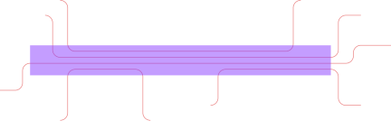
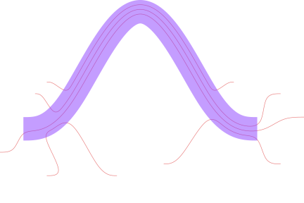
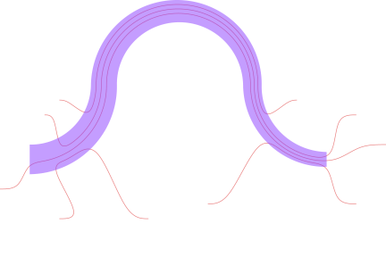

Routes
A Paths.Route implicitly defines a Path between two points, following a Paths.RouteRule, with a specified start and end direction. It's a building block for "interactive autorouting". For simple cases, it lets you define a path between two points without having to do any geometric calculations yourself. In more complicated cases, you can provide additional waypoint constraints to guide it.
To draw a Path from a Route, you can use Path(r::Route, sty).
More often, you won't work directly with the Route type but will instead use route! to extend an existing path to an endpoint according to the rules you specify.
Route drawing internals
Calling Path(r::Route, sty::Style) creates a new Path at p0(r), then extends it to p1(r) using route!. The default implementation of route!, for a generic RouteRule, first calls reconcile! to validate and modify waypoints as necessary. It then calls _route! to draw the path.
Some rules, like Paths.BSplineRouting, route through all waypoints at once by implementing a specialization for _route! directly. Others use the rule to route from waypoint to waypoint by implementing _route_leg!. For example, each leg in StraightAnd90 routing has a single 90-degree bend with up to one straight segment on either side, or a single straight segment if no bend is necessary.
Channel routing
RouteChannels offer a way to run routes in parallel, with routes joining or leaving a channel at different points. Using Paths.SingleChannelRouting, we can set the "track" (a curve offset from the channel centerline) for each route to follow through the channel, as well as some rules for joining and leaving the channel from route start and end points. Here's a basic example with a straight channel:
using DeviceLayout, .PreferredUnits, FileIO
import DeviceLayout.Graphics: inch
# Define start and end points for various routes
p0s = [
Point(100.0, 200.0)μm, # Enter and exit from top
Point(50.0, 150)μm, # Enter from top, exit from right
Point(-100.0, -100.0)μm, # Enter from lower left, exit from right
Point(600.0, -150)μm, # Enter from bottom, exit from right
Point(100.0, -200.0)μm # Enter and exit from bottom
]
p1s = [
Point(900.0, 200.0)μm,
Point(1100.0, 150.0)μm,
Point(1200.0, 50.0)μm,
Point(1100.0, -150.0)μm,
Point(400.0, -200.0)μm
]
# Create channel
channel_path = Path()
straight!(channel_path, 1mm, Paths.Trace(0.1mm))
channel = Paths.RouteChannel(channel_path)
# Initialize paths
paths = [Path(p) for p in p0s]
# Define route rule
transition_rule = Paths.StraightAnd90(25μm) # Manhattan with 25μm bend radius
margin = 50.0μm # Room for bends between endpoints and channel
rule = Paths.SingleChannelRouting(channel, transition_rule, margin)
# Set tracks
tracks = [1, 2, 3, 4, 4] # Last two share a track
setindex!.(Ref(rule.segment_tracks), tracks, paths)
# Draw routes
for (pa, p1) in zip(paths, p1s)
route!(pa, p1, 0.0°, rule, Paths.Trace(2μm))
end
c = Cell("test")
render!.(c, paths, GDSMeta())
render!(c, channel_path, GDSMeta(1))
save("straight_channel.svg", c; width=6inch, height=2inch);
We can also have curved channels, like the BSpline-based example below. For the transition rule, StraightAnd90 would no longer work for the paths that join the channel at an angle, so we use BSplineRouting instead. We also enable auto_speed and auto_curvature on that rule to help smooth out the B-splines and maintain continuous curvature.
# Create BSpline channel
channel_path = Path()
bspline!(
channel_path,
[Point(0.5, 0.5)mm, Point(1.0mm, 0.0μm)],
0°,
Paths.Trace(0.1mm),
auto_speed=true,
auto_curvature=true
)
channel = Paths.RouteChannel(channel_path)
# Initialize paths
paths = [Path(p) for p in p0s]
# Define route rule
transition_rule = Paths.BSplineRouting(auto_speed=true, auto_curvature=true)
margin = 50.0μm
rule = Paths.SingleChannelRouting(channel, transition_rule, margin)
# Set tracks
tracks = [1, 2, 3, 4, 4] # Last two share a track
setindex!.(Ref(rule.segment_tracks), tracks, paths)
# Draw routes
for (pa, p1) in zip(paths, p1s)
route!(pa, p1, 0.0°, rule, Paths.Trace(2μm))
end
c = Cell("test")
render!.(c, paths, GDSMeta())
render!(c, channel_path, GDSMeta(1))
save("bspline_channel.svg", c; width=6inch, height=4inch);
Channels can also have variable width, like the example below using the TaperTrace style on a compound segment consisting of four turns.
# Create tapered, composite channel
channel_path = Path()
turn!(channel_path, 90°, 0.25mm, Paths.Trace(0.1mm))
turn!(channel_path, -90°, 0.25mm)
turn!(channel_path, -90°, 0.25mm)
turn!(channel_path, 90°, 0.25mm)
simplify!(channel_path)
setstyle!(channel_path[1], Paths.TaperTrace(0.1mm, 0.05mm))
channel = Paths.RouteChannel(channel_path)
# Initialize paths
paths = [Path(p) for p in p0s]
# Define route rule
transition_rule = Paths.BSplineRouting(auto_speed=true, auto_curvature=true)
margin = 50.0μm
rule = Paths.SingleChannelRouting(channel, transition_rule, margin)
# Set tracks
tracks = [1, 2, 3, 4, 4] # Last two share a track
setindex!.(Ref(rule.segment_tracks), tracks, paths)
# Draw routes
for (pa, p1) in zip(paths, p1s)
route!(pa, p1, 0.0°, rule, Paths.Trace(2μm))
end
c = Cell("test")
render!.(c, paths, GDSMeta())
render!(c, channel_path, GDSMeta(1))
save("compound_channel.svg", c; width=6inch, height=4inch);
Routing in Schematics
We can add Routes between components in a schematic using route!(g::SchematicGraph, ...), creating flexible connections that are only resolved after floorplanning has determined the positions of the components to be connected. (For more about the schematic workflow, see Concepts: Schematic-Driven Design)
The first node added to a SchematicGraph is positioned at the origin, and each subsequent fuse! operation fully determines the position and rotation of the new node.
So a design project might start by creating a node with a "chip template" component containing hooks for ports and other boilerplate. It would then fuse! any CPW launchers to the template. The devices in the middle of the chip are added and fused to one another without yet fixing their position relative to the chip template. Next, one connection is made between this connected subgraph of devices and the connected subgraph containing the template and launchers, fixing their relative positions. Since the chip template was added first, it will still be centered at the origin.
At this point, further connections still need to be made between various device ports and CPW launchers positioned on the chip template, all of which are now fully constrained. Using fuse! to connect a Path to both ports would overconstrain the layout, causing floorplanning with plan to fail unless the Path is drawn precisely to agree with the existing constraints. But the designer may want to vary parameters that change the port positions without redefining that Path, or they may simply not want to have to calculate the precise path themselves.
To avoid overconstraining the layout, the remaining connections are instead defined with the desired flexibility using route!. This creates a ComponentNode containing a RouteComponent with edges to the ComponentNodes at its start and end points. As the last step in plan, after the initial floorplanning phase has determined the position of all fixed Components, the route component is updated with its newly calculated endpoints, allowing it to find a path from one component node to another.
You can add edges to the schematic graph that will be ignored during plan using the keyword plan_skips_edge=true in fuse!.
Differences between schematic and geometry-level routing
In geometry-level layout, we can extend a Path using route!(path, p1, α1, rule, style; waypoints=[], waydirs=[]). The schematic-level call looks a bit different: route_node = route!(graph, rule, node1=>hook1, node2=>hook2, style, metadata; waypoints=[], waydirs=[], global_waypoints=false, kwargs...). In this case, the start and end points and directions are not known until after plan, and no path is actually calculated until until we either build!/render! the schematic or call SchematicDrivenLayout.path(route_node.component).
By default, global_waypoints=false, meaning that waypoints and directions are viewed as relative the the route start, with the positive x axis oriented along the route's initial start direction. Often global_waypoints=true is more useful, especially for a simple interactive routing workflow: When you view your final layout built from the schematic, you may find that a route bends too sharply or goes too close to a component. You can write down the points it needs to go to in the schematic's global coordinate system, and add them as waypoints to the route. That is, if you go back to your layout script, you can modify the route! call:
route_node = route!(
g,
rule,
node1 => hook1,
node2 => hook2,
sty,
meta; # Original route command
# Add waypoint information to to `route!` call
global_waypoints=true, # Waypoints are relative to global schematic coordsys
# If global_waypoints=false (default), waypoints are relative to the route start
# with the initial route direction as the +x axis
waypoints=[Point(600.0μm, -3000.0μm)],
waydirs=[90°]
)Now the route in route_node is guaranteed to pass through the point (600.0μm, -3000.0μm) on its way to its destination. If the RouteRule's implementation uses waydirs, then it will also have a direction of 90° at that point.
Channel routing at the schematic level also gets some special handling. When using the Paths.SingleChannelRouting rule, the router will look for the rule's Paths.RouteChannel in the schematic to get its global coordinates for routing. Additionally, paths are not assigned tracks in the rule using Paths.set_track! before route!. Instead, a route's track is set using the track keyword in route!, defaulting to a new track at the bottom of the channel so far (track=num_tracks(channel)+1). Because the routes are not drawn until later, the track offsets are still calculated using a number of tracks given by the maximum track number of all routes that are eventually added to the channel with the same rule. (Each route in the channel should still use the same instance of the SingleChannelRouting rule.)
Note that routes through a channel are no different from other routes as far as the schematic graph is concerned. That is, they are still just routes from one component's hook to another component's hook; they just happen to have a RouteRule that references the channel between them. One way to think about it is that the channel acts as a kind of extended waypoint. In particular, routes are not fused to the channel, and the channel component doesn't contain any individual route geometries in its own geometry (which is just empty).